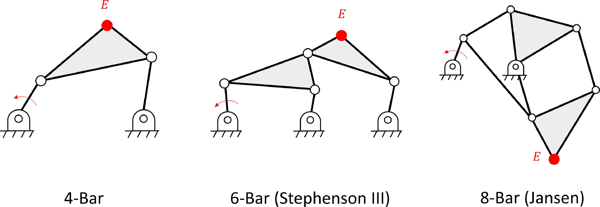
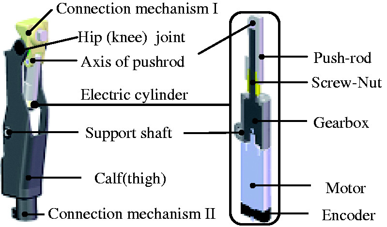
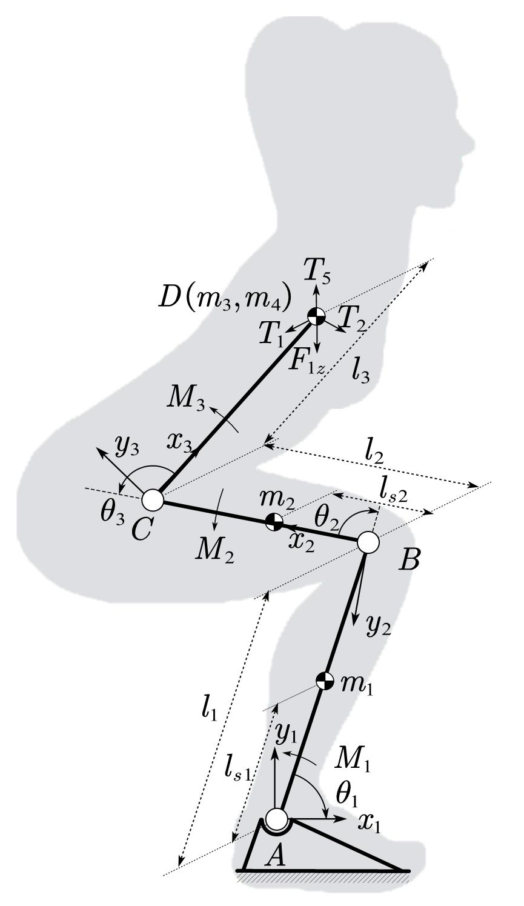
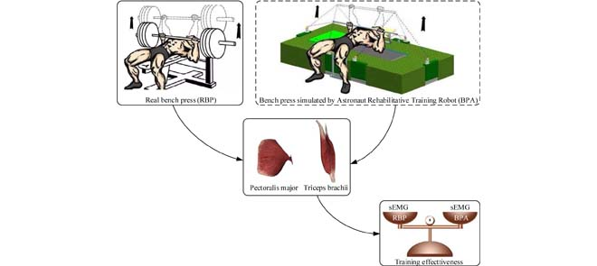
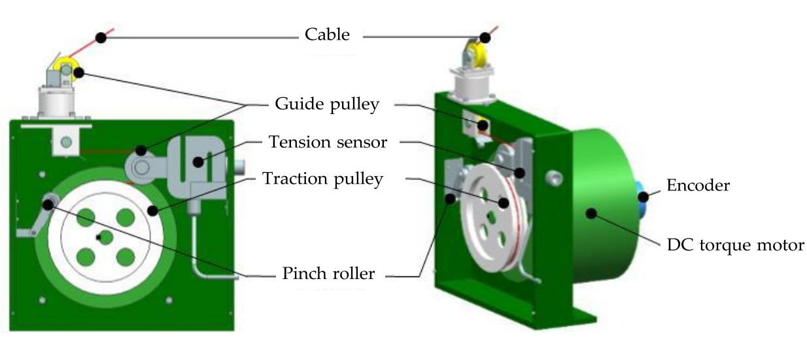
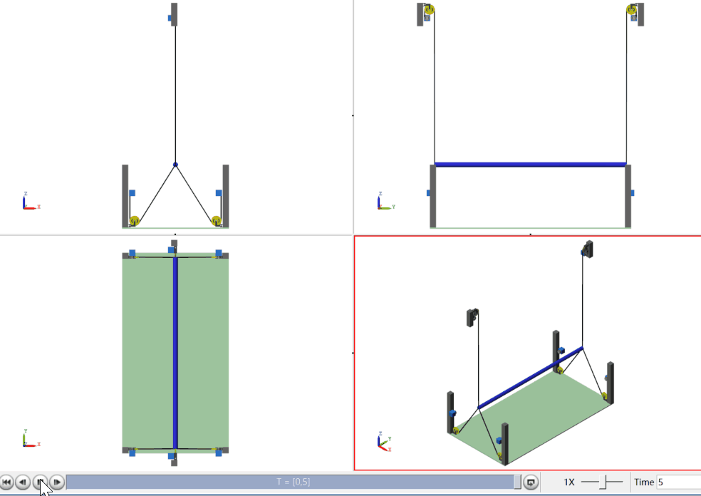
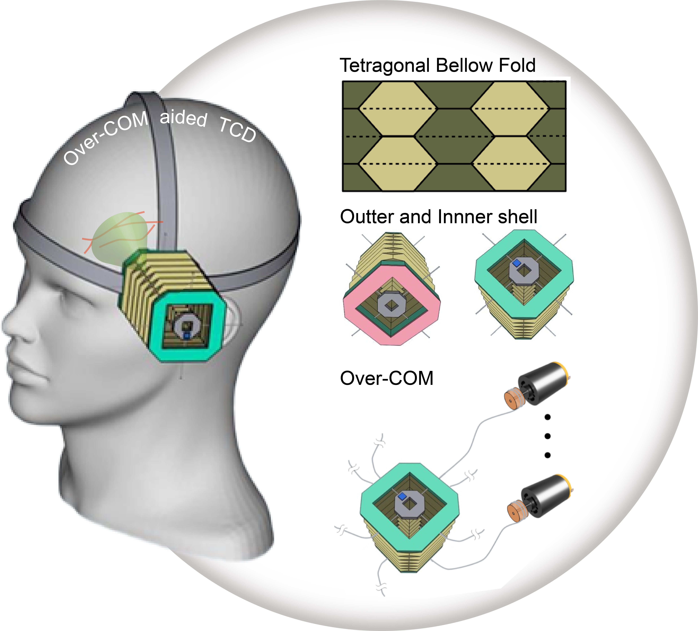
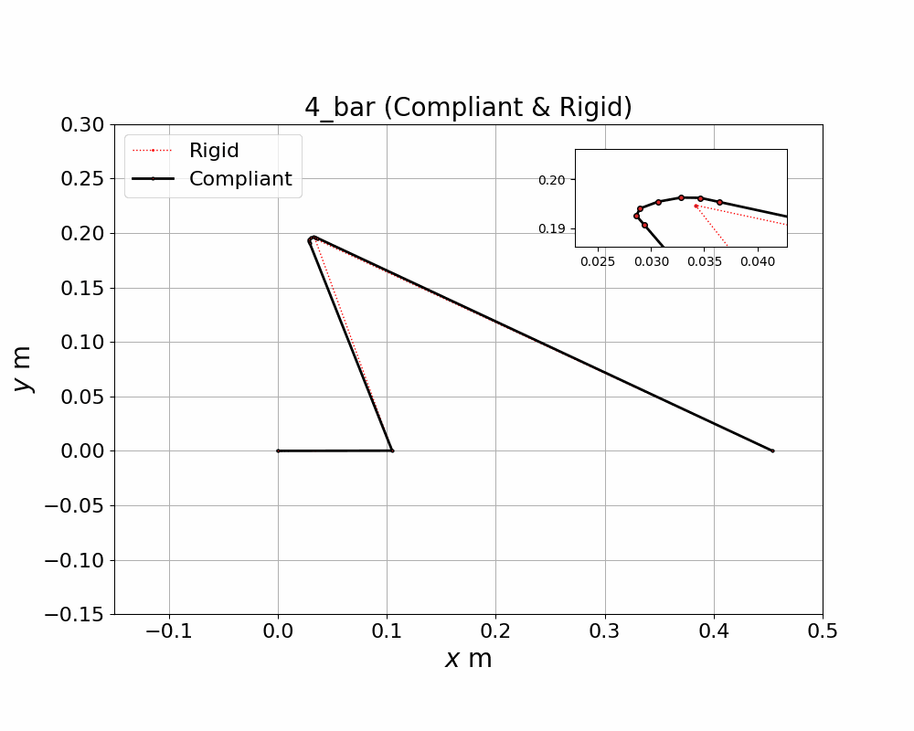

Lailu Li
I am a Post-doc researcher at Prof. Hongliang Ren's Lab, CUHK, Hong Kong, where I work on robotic technology in rehabilitation, assistance, and medical areas. Before that, I did my PhD at Harbin Engineering University, where I was co-advised by Prof. Lixun Zhang and Prof. James Sulzer (UT-Austin) who has currently moved to CWRU. I did my bachelor's degree at the School of Mechatronics, China University of Mining and Technology.
Email / Google Scholar /
Research
I have done several projects in robotic technology used in rehabilitation and assistance areas, including Designs and Optimizations of mechanisms and hardware, Human-machine System Modeling and Simulation. Currently, I am in the project of robotic Optical Coherence Tomography (OCT) scan, which aims to develop a series of millimeter-lever mechanisms with linear motion, continuous rotation or oscillation rotation mechanisms to combine with the reflector of the OCT, realizing in-vivo OCT scanning.
We first proposed a lower-limb exoskeleton in 2017. However, we found it was expensive and complex which limit its . Then we try to develop a affordable lower-limb gait trainer with only one actuator, comparison work between similar linkage mechanisms were conducted: the Jansen Mechanism demonstrates the best performance to track the ankle joint trajectory in a healthy gait cycle.




- Kinematic comparison of single degree-of-freedom robotic gait trainers.
Lee J, Li L, Shin SY, Deshpande AD, Sulzer J.
Mechanism and Machine Theory 2021 | paper - Prototype design, modeling, and experimental research of a novel lower limb powered exoskeleton.
Zhang L, Li L∗, Chen Z, Song D.
PIME PART C 2017 | paper
This research aims to analyze the muscle force and joint force, to give the subject best exercise experience with a lower injury risk. The biomechanics models are solved by the Gauss Radou Pseudospectral method. We propose load laws for the specific exercise with a decrease up to 30% of the maximum joint reaction force.



- Dynamic analysis of the human-machine system of a 4-Bar gait constraint mechanism.
Li L∗, Zhang L, Wang B, Da Song.
ICMRA 2022 - A Radau Pseudospectral Method-Based Optimization Model for Upper Limb Muscle Force Analysis During Bench Press Process.
Li L, Zhang L, Deng X, Song D, Xue F.
BASIC & CLINICAL PHARMACOLOGY & TOXICOLOGY 2019
Cable-driven actuation systems use cables or wires to render force and position control. These systems can be lightweight, compact, and provide high force feedback levels. We came up an idea to develop a cable-driven load simulator system to be applied in specific scenarios, including physical exercise, and collaborative exercise. Research in Cable-driven Unit design, system configuration design and optimization, workspace analysis, cable tension distribution and force controller design (force accuracy above 90%) have been carried out.




- Simulation Analysis of A Cable-Driven Astronaut on-Orbit Physical Exercise Equipment.
Li L∗, Zhang L, Wang B, Song D.
ICARA 2023 - Modeling and control strategy of a haptic interactive robot based on a cable-driven parallel mechanism.
Song D, Xiao X, Li G, Zhang L, Xue F, Li L.
Mechanical Sciences 2023 | paper - Running Experimental Research of a Cable-Driven Astronaut on-Orbit Physical Exercise Equipment.
Li L∗, Zhang L, Wang B, Xue F, Zou Y, Song D.
Machines 2022 | paper - Trajectory Planning of an Underactuated Cable-Driven Planar Device for the Trunk.
Li L, Wang S, Yang G.
ICMA 2021 | paper - Running experimental research of a wire driven astronaut rehabilitative training robot.
Zou Y, Zhang L, Li L, Ma H, Liu K.
IEEE Access 2018 | paper - Force control strategy and bench press experimental research of a cable driven astronaut rehabilitative training robot.
Zhang L, Li L∗, Zou Y, Wang K, Jiang X, Ju H.
IEEE Access 2017 | paper - Force Control and Experimental Study of a Cable-Driven Robot for Astronaut Deep Squat Training.
Zhang L, Li L∗, Jiang X, Tian W, Song D.
Jiqiren/Robot 2017 | paper - Workspace Algorithm and Layout Optimization of Parallel Mechanisms Driven by Flexible Cables.
Zhang L, Song D, Li L, Xue F.
Journal of Harbin Engineering University 2017 | paper
Inspired by the principles of origami, we propose a head mount that allow for efficient folding and unfolding while maintaining stability and durability. We demonstrate the feasibility and effectiveness of the mount through experimental results and discuss its potential applications in various medical procedures.

- An Overhead Collapsible Origami-Based Mount for Medical Applications.
Li L∗, Long FL, Lim I, Sun T, Ren H.
Robotics 2023
Compliant mechanisms are a type of mechanical structure that rely on the elastic deformation of materials to produce motion or force. Accordoing to the Discrete Elastic Rod (DER) theory, I changed one of the rigid revolute joint to compliant revolute, which is interesting and fancy. It is worth mentioning that the compliant mechanism can be fabricated by

